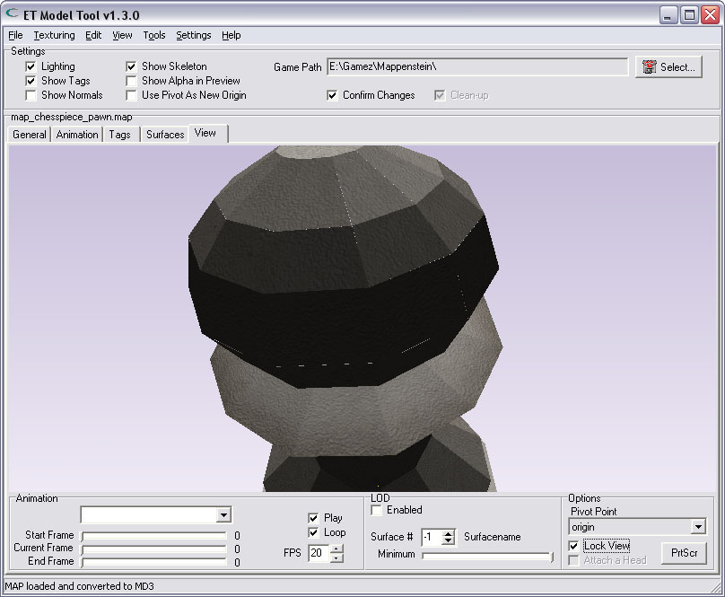
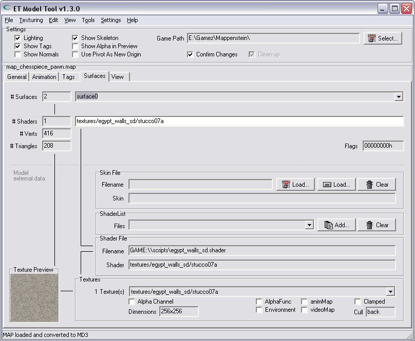
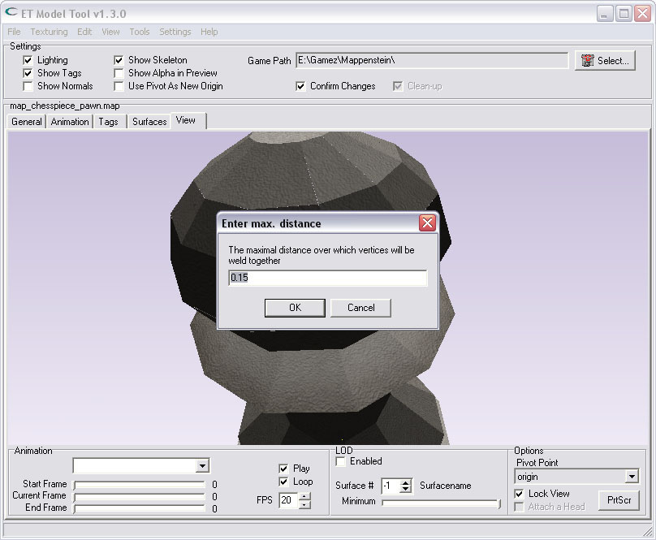

| Fixing cracks and gaps |
If Your model is not correctly made, it can show cracks or gaps on the edges of brushfaces. These gaps can be created when You have verticles that are not on the grid, and You then want to move the vertices (while they snap to the grid again)..
There is an option that tries to get rid of the gaps by "welding" vertices which positions are almost the same.
Here is an example of a pawn that shows several gaps. You can see the edges do not perfectly fit together. |
|  |
| |
| |
| Select the surface for correcting gaps |
First, select the surface You want to try to correct. Because the routine works on 1 surface only, You need to select, and correct, every surface seperately.
You must select the current surface from the dropdown-listbox on the "Surfaces"-Tab. |
|  |
| |
| |
| Select the option from the menu |
Once You have selected the proper surface for correction, select the choice from the menu:
"Fix cracks & gaps for current surface". |
 |
| |
| |
| Select the maximal weld-distance |
This next dialog shows a question and wants some user-input. It asks for the "max. distance" (in game-units) for welding vertices.
Depending on the size of Your model, You can change this value as You like.. The default value will weld vertices that are within eachother's range of 0.15 units.
If You manually set this value to a bigger number, You can get some undesired results, because too many vertices will be joined together.. So, do not make this value too big. If Your model gets distorted, You must reload it and try again with a smaller value.. |
|  |
| |
| |
| Cracked & Gaps are gone, woohoo!.. |
| If all went well, the cracks & gaps are gone, and the edges of neighbouring sides are touching again. |
|
| |
| |